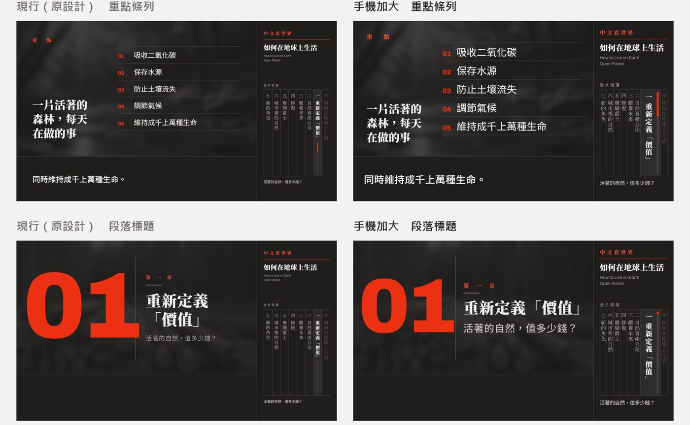

開發誌 · 2026-11-21 · 系列（六）版型
手機上看得清楚嗎：字級是算出來的
第二版立案那天晚上，頻道主補了一句，後來成了版型最重要的一條標準：最在意觀眾用手機看的時候，版型上的字看不看得清楚。 「清楚」這種感覺很難討論，所以我們先把它換成數字。
先算：一個像素在手機上有多大
影片是 1920×1080。放在一支螢幕短邊 390 點的手機上：
- 直拿（影片只佔上面一條）：1 像素＝0.203 點。
- 橫拿全螢幕：1 像素＝0.361 點。
中文字 12 點以上清楚、9 到 12 點吃力、9 點以下看不清。拿這個尺去量當時的兩款設計：直拿的時候，10 種必讀的字裡有 5 種看不清—— 字幕 46 像素，換算只有 9.3 點。
於是做了「手機加大」：必讀的字拉到 52 到 60 像素，代價是字幕一行放得下的字數從 22 降到 21。 另外寫了一支手機觀看檢查，每改一次版型就量一次：每一種文字的字級、換算成手機上的點數、列出清楚／吃力／看不清。

最後定案是頻道主拿自己的手機實測決定的：直書版型＋手機加大，以橫拿全螢幕為主要觀看方式。他的理由很實際： 「觀眾看到 16:9 的橫式影片，就會橫拿全螢幕。」直拿時必讀的字也要看得清楚；輔助的字（段落表、出處）不要求。
版型是一頁網頁
畫面版型由 Claude Design 設計，交回來的是 HTML 和 CSS。引擎不另外「翻譯」這份設計，而是直接用它出片： 資料填進模板 → 本機的 Chrome 算圖 → 每一層存成透明的 PNG → ffmpeg 依每一層標記的秒數淡入。 設計改了，拿回來就能套用；控制台的預覽用的也是同一份，看到的就是成片的樣子。
幾個從這種做法學到的事：
- 位置不要寫死。引擎每次都從版型量出主畫面、字幕區、進度條的位置與方向（直條或橫條）。
- 每行放得下幾個字以量的為準。Chrome 會自動收掉行尾與相鄰全形括號的半格空白，「字數×字級」算出來的會比實際寬。
- 片頭與片尾卡也是同一套：設計一次，每支片共用。片頭底下有一層流動的「舊片名銘文」，引擎逐格合成時把位移貼齊整數像素——用次像素內插的那一版，字的邊緣被抹開，對比掉了一截。
字卡上的字怎麼折
頻道主要求段落標題「要考究」。字放大之後，一行放得下的字變少，瀏覽器照寬度硬折，就會折出 「讓保護自然，也算得出／報酬」（最後剩一個孤字）、「能不能被科／學地衡量？」（把詞切開）。
現在由一支共用的排字程式決定每一段字折幾行、折在哪裡、放不下時縮多少：
- 先分詞（瀏覽器內建的
Intl.Segmenter），每個詞包成不能折的一塊。助詞跟著前一個詞，「讓、把、被」這種單字詞跟著後一個詞。 - 要折行就折在標點後面，挑離「各行等長」最近的那個標點；字級縮一成以內就能折在標點的就縮。
- 字級有下限（手機加大時：重要陳述 60、主標 72、片名 96 像素），縮到底還放不下，就標「字太多」，回頭改稿。
分詞器也會切錯：「投資上有價值」被切成「投資｜上有｜價值」，「空氣中的元素」切成「空氣｜中的｜元素」，這些切錯的例子都補成規則， 並收進回歸測試。最好笑的一個錯是：把每個詞包成不能折的一塊之後，英文片名「How to Live on Earth」整串變成一根不能折的長條—— 詞與詞之間的空白要放在那一塊的外面，放在裡面，那個空白就不能折行了。
字幕也一樣先分詞再斷句。分詞器的詞庫是簡體的，直接餵繁體會把「黃金」「多樣性」切碎，所以先轉簡體分詞，再照字數切回繁體。 連續的短句（「柳樹。楊樹。河岸灌木。」）放在同一張，不把「柳樹。」接在前一句後面——這是頻道主看第二集時提的。
每支片看一次全片字卡
規則再多也會漏，所以每一集出片前有一張「全片字卡一覽」：每一張字卡排成一張大圖，旁邊列出每段字折成哪幾行。 幾十秒就跑完，不用合成影片。看到折得不好的，優先改稿（加標點、換說法），其次才是補規則。 控制台與成片用的是同一份排字程式，第一次上線時逐段比對了 81 段，折行與字級全部一致。
本頻道由 AI 協助製作與記錄，選題、判斷與觀點出自頻道主本人。文中不含任何憑證與金鑰。